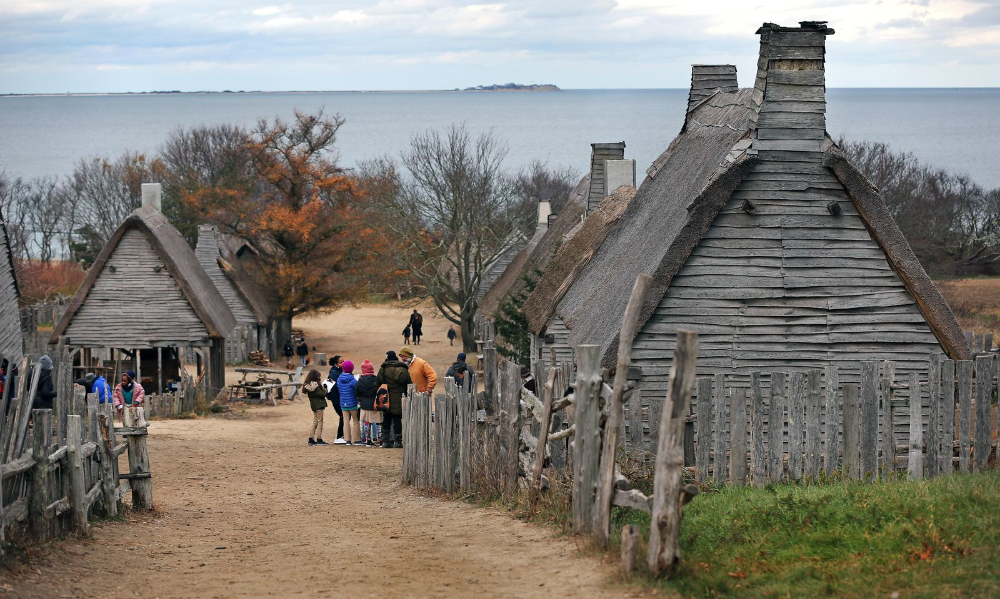

Man, I hate Plymouth. I bet people from Plymouth hate Plymouth. It's such a boring town, for boring people. I hope people from Plymouth move out from Plymouth.

I remember going there in elementary school on a field trip to Plimoth Plantation. It's a weird concept having people dress up and act like Pilgrims and Native Americans. Not only that, but they constructed buildings like the longhouses and the original colony. They even have the Mayflower near the rock (it's a reconstruction of it, I think), that you can board onto to see how they felt travelling the oceans on it. I don't know, it always felt so boring, especially as a young kid. As well, it felt quite performative, and a bit racist? I don't know about that one, it's been too long.

Speaking of which, the rock. I hate it. What's the big deal about it? Who cares? I guess my mom, because whenever we have guests from far, she always takes them, and brings me along with. It's a tourist trap! And people fall for it. Last time we spent hours going around Plymouth to see all the landmarks and statues and my god, I just wanted to go home. Hopefully I won't be there for 5 year minimum.